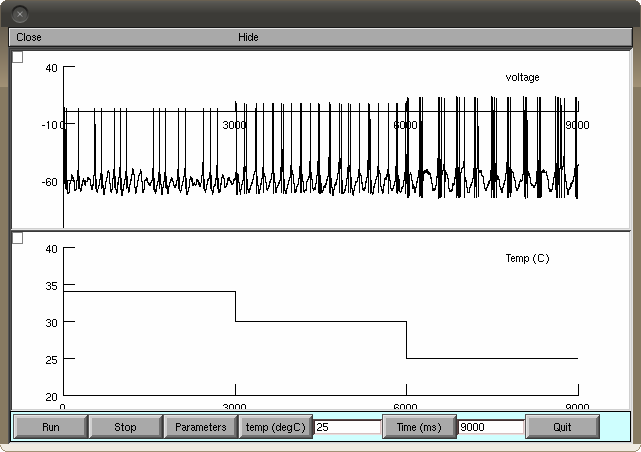

This is the readme for the model associated with the paper: Orio P., Parra A., Madrid R., Belmonte C. and Viana F. (2011) Role of the Hyperpolarization Activated Current (Ih) in the Firing Pattern of Mammalian Cold Thermoreceptor Endings. J Neurophysiol 108:3009-3023 (2012) published ahead of print September 5, 2012, doi:10.1152/jn.01033.2011 This is a model for temperature-dependent bursting firing patterns, inspired by Braun et al. (Int J Bif Chaos 8:881-889 (1998)), with added hyperpolarization-activated current (Ih) and a TREK1-like potassium current. Also, there is a minor modification in the slow repolarizing current. This simulation code requires NEURON freely available from http://www.neuron.yale.edu How to run the model: Auto-launch from ModelDB or 1) compile the supplied mod files 2) run or double-clic mosinit.hoc You will be prompted to choose type of simulation and type of Ih: 1) The type of simulation - V traces @34, 30 and 25ºC: This is to produce voltage traces similar to Figures 7A and 8A. - 6 temperature steps (ISI plot): This will run a longer simulation (300s) with temperature steps at 34, 32, 30, 28, 26 and 24ºC. No voltage trace will be plotted but instead a firing rate plot, an ISI plot and a temperature trace. Also a 'Save' button will be provided that will generate a file called "APdata.txt". This text file will contain three columns: Time of spike, ISI and temperature. With this data the Figures 7B, 8B and 10A can be generated. - Effect of ZD (ISI plot): This will also run a 300s simulation with a firing rate and ISI plots, similar to Figures 7C, 8C and 10B. Spike time data can also be saved. - Effect of ZD with v-trace: A shorter simulation with the voltage trace while the Ih conductance is being reduced. 2) The type of Ih: - wild type (HCN1): tau=125 ms (@25ºC) and V0=-85 mV. (Figure 7) For example, after selected from the initial dialog box and "Run" is pressed you should see an image similar to:  - slow Ih (HCN2): tau=900 ms (@25ºC) and V0=-95mV, (Figure 8) - slow Ih gh=0.2: tau=900 ms (@25ºC), V0=-95mV and gbar_ih=0.2 mS/cm2 (Figure 10)